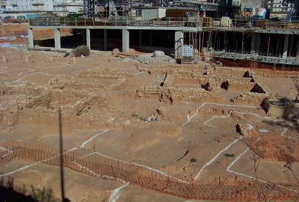
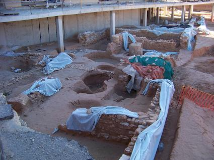
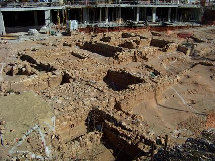

|
Villa
romana de Paterna
La denominación de Paterna es de procedencia
latina, "paternus", perteneciente al padre. En el término municipal de
Paterna se han encontrado restos arqueológicos del Neolítico y Edad del
Bronce (LLoma de Betxi), donde posteriormente se asentaron los poblados
íberos de Despeñaperros y La Vallesa. Restos de los romanos se han
encontrado en la población paralelos a la actual acequia de Moncada,
jalonándose varias villas rústicas a lo largo de ésta. En Paterna de época
romana se había hallado hasta la fecha los restos de un acueducto y un
horno que se desmontó y actualmente esta desaparecido. La torre de Paterna
sus cimientos son de origen romano. En el subsuelo de las cuevas se
encontraron restos de cerámica ibera y romana.
|
En febrero de 2009 unas obras
permitieron hallar una villa del siglo I bajo la antigua fábrica de
galletas Río. La villa romana data entre los siglos I y IV.
Los arqueólogos han encontrado
monedas, columnas, una copa de vidrio verde tallada con el Crismón
de los cristianos primitivos, restos de cerámica, parte de restos de
los cuerpos de dos niños de unos cinco años, termas con praefornium
(compuesto de canales para distribuir el calor a las distintas
termas) y un tercularium (prensa de aceite). Según los arqueólogos
los objetos hallados hacen pensar que podría tratarse de una villa
que abastecía a la ciudad de Valencia de aceite, trigo y vid. La
villa abarca una superficie 5.000 metros cuadrados. Se han
identificado diferentes partes existentes en las villas romanas de
la época como el área residencial, un taller para extraer aceite de
oliva y algún edificio de grandes proporciones con columnas. El
contrapeso que se utilizaba para prensar las aceitunas tiene 1,5
metros de diámetro y pesa cuatro toneladas. Además, ya se han
descubierto tres balsas utilizadas para la decantación posterior del
aceite, para limpiarlo de impurezas. |
 |
Las viviendas edificadas han dañado
más de la mitad de la villa.
|
 |
 |
Más info de la agresión a la villa y localización restos
romanos:
http://sites.google.com/site/villaromanapaterna/
En
febrero de 2025, también se han hallado restos arqueológicos de época
romana en el solar de la calle del Santísimo Cristo de la Fe. En
principio apuntaron a restos de una zona de cultivo, asociada a la Villa
Romana.
|